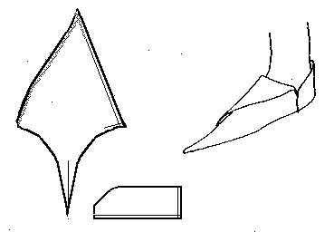
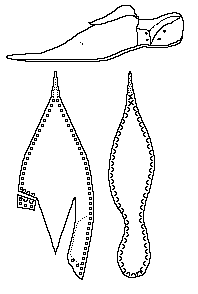

A simple long-toed shoe, based on pictures of an example in the Victoria and Albert Museum in London. There is another, similar example at the Deutsches Leder Museum, Offenbach-am-Main. There is supposed to be one similar to this in the Mus�e Bally, in Shoenwerd, Swizterland. This pattern is not based on a physical examination of the actual item.
There has been some discussion among shoe experts recently about the legitimacy of this shoe design - most noteably several comments by June Swann regarding the marks of the last in the leather. I have some personal questions regarding the assemply of the sole that simply can not be resolved by photographs. In either case, I can not tell you they are fakes, nor can I tell you that they are not.
I have not heard anything like that regarding the shoe at the Deutsche Leder Museum, although from the photographs it is very similar to the V&A shoe.
According to M.Volken, a shoe researcher in Switzerland (email communication to the Crispin Colliquy, http://www.bootmaker.com/HCC/discuss), the only poulaine at the Bally Museum is from the castle of Issogne in Italy, and is described as a 'real 15th century poulaine'. She has expressed her own doubts about its validity. Again, I have only seen a photo of this item, although to me, it doesn't bear much similarity to the V&A shoe.
The side is intended to lace. The show should be made with a rand or a full welt. The last bit of the toe should be left sewn until after the rest of the shoe is turned, then carefully turned from the outside, and stab sewn through the sole. There is a heel stiffener. The basic design is MY estimate of the pattern, and may not be absolutely accurate.
Return to [Middle Ages Index] [High Middle Ages Index] or [Next]
Footwear of the Middle Ages - Historical Shoe Designs/Number 29, by I. Marc
Carlson. Copyright 1996
This page is given for the free exchange of information, provided the Author's Name is
included in all future revisions, and no money change hands, other than as expressed in
the Copyright Page.